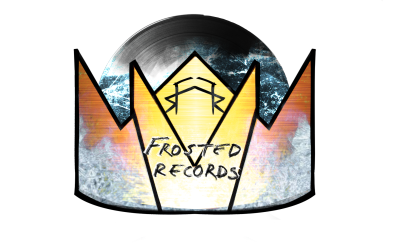

Founded in March of 2020 by a group of Michigan creatives, led by
Matt Gencay, Dylan Kissel, J.T. Jasinski, Nate Lentz, Sam Ovens, and
Bayley Frost, Frosted Rexords set out to land a new crop of diverse artists
that could appeal to fans of DIY music at the loca level, while maintaining
the ethos of a national brand. With the label commited to branching out
from its Michigan roots in the United States, fans all across the world will
soon be able to hear Frosted Rexords artists in their hometowns, as the
A&R department has worked tirelessly to track down fresh talent, globally.
With the help of an online campaign centered around finding the next great
Frosted Rexords artists, the team of talent on the roster is commited to
adding to their family.